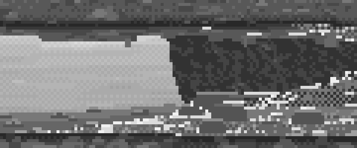
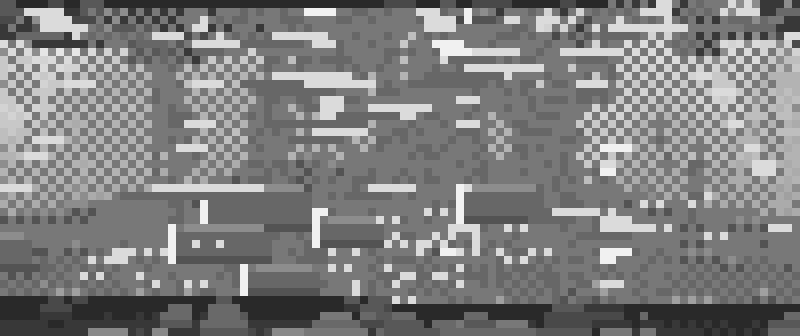

7. Where the mirror breaks: a riffle (partly solved)
Status first. This page is only half a recipe. The critic's last word was "not ready: the riffle (a field, not jets)". I'm including it because two things in it do work, and because the wrong turns are the most instructive ones I took. The two things are the mirror breaking under a reflection and marks that follow the streamlines.
Code: add_riffle, lip_x and roughness in code/world.py; paint_flow in code/painter.py (its docstring still describes the crest-line version I abandoned: steps 3–4 below are what the code does); code/s3_flow.py; copy B in code/c0b_v11.py.

The same willow over still water and over a riffle (flow 1.0), above the golden-hour photo. figs.py fig_riffle.
Step 1. Read his riffle first (copy B)
In V11AM, the riffle's marks are cycled mid-blues that are bluer and darker than the lilac mirror. The facets of a broken surface tilt toward you, mirror higher sky and let the bed show. I mapped his marks by colour class:

study/v11_marks.png, V11AM 370,335 at 5×. Blue: the riffle's cycled tones. Magenta: the cycled darks at reflection edges. Black: rock and bank.
The structure: a solid core, a checker margin, sparse checker spray, cut into distinct jets, with chains of single pixels on the checker lattice rising out of them and leaning outward like a fountain. There's plain mirror between the jets. His river flows toward the viewer, so the jets run up the screen.

nb025. His riffle at 8×.
Step 2. Put roughness where the bed makes it
A riffle is a gravel sill across the channel. Its lip is a line in plan: skewed across the channel (sills usually are), and bowed downstream mid-channel where the thalweg runs fastest. Upstream of the lip the water is a glassy tongue. Downstream, the surface breaks hardest just below the lip and dies away over half metres:
def lip_x(self, z, xc):
zmid = 0.5 * (self.z_near + self.z_far)
sf = np.clip((z - self.z_near) / (self.z_far - self.z_near), 0, 1)
return xc + getattr(self, 'skew', 0.0) * (z - zmid) + 0.35 * (self.z_far - self.z_near) * 4 * sf * (1 - sf)
def roughness(self, x, z):
...
u = self.lip_u(x, z, xc)
r = np.where(u >= 0, st * np.exp(-u / half) * (1 - np.exp(-u / 0.06)), 0.0)
Every mark below is placed by R. None is scattered over the water at random.
Step 3. Break the mirror, don't erase it
The clearest result of the stage. Inside the rough zone, a reflected bank is chopped into dashes, with the milky mirror's second-lightest step between them. A broken reflection is still recognisably the willow's:
refl = wm & (G['refl'] == 1) & (R > 0.2)
for r in range(H):
cs = np.nonzero(refl[r])[0]
x = 0
while x < len(cs):
L = int(rng.integers(2, 6))
if rng.random() < 0.35 * R[r, cs[x]]:
cv[r, cs[x:x + L]] = mir[4]
x += L + int(rng.integers(1, 4))
Then the broken zone itself is V11's grammar, a density field of darker water tints, cut into streaks by noise stretched along the flow:
jets = pk.value_noise(H, W, 3, rng, 2, aniso=(0.5, 4.0)) # streaks run WITH the flow
D = R * (0.45 + 0.9 * jets)
solid = wm & (D > 0.78)
chk = wm & (D > 0.45) & ~solid & par
spr = wm & (D > 0.22) & (D <= 0.45) & par & (rng.random((H, W)) < 0.35)
Step 4. Marks follow the streamlines
This took me three tries. I first drew wave crests, lines across the channel. At a low angle they foreshortened into near-vertical chains that read as fence posts. Then I noticed why V11's jets run up the screen: his river flows toward the viewer. Ferrari's marks follow the flow. My flow crosses the view, so my marks are horizontal: dashed runs of glare, each sometimes with a shorter dark run just under it (the back of a wave mirrors low bright sky, its face mirrors high sky or the bed). They're dense below the lip, spaced wider downstream, and now and then turn into a short crest arc that steps a row every 2 px, like the broken curving foam lines in the Iori photo:
u = rng.exponential(half * 0.5)
while u < 3 * half:
a = st * np.exp(-u / half)
if rng.random() < 0.5 + 0.5 * a:
L = int(np.clip(rng.uniform(0.05, 0.2) * ppm * (0.5 + a), 1, 5))
...
if a > 0.4 and rng.random() < 0.25: # a short crest ARC across the flow
for j in range(int(rng.integers(3, 6))):
put(rr - (j // 2), c + L + j, foam if (a > 0.7 and rng.random() < 0.5) else glare)
u += rng.exponential(0.35 + (1 - a) * 1.2) * (1 if rr % 2 else 1.6)
The lip itself is the densest band of marks, 2–4 px of broken foam and glare, jittered row by row. It is never a line of dots.

The riffle at 6×, as delivered.
The wrong turns (so you can skip them)

nb119. Wave crests drawn across the channel. At a low angle they foreshorten into vertical white posts, and the density field underneath is flat blocks.

nb124. Marks along the flow at last, but long flat glare rectangles over checker: "scanline tearing", the critic called it. The dashes were 6–30 px long. Riffle dashes are 1–5 px.

nb122. A straight diagonal lip, drawn as single light dots. It's ruled and dotted at once. A lip follows the bed and is where the marks are densest.
- Stones half a metre across. My first bed stones dominated the riffle. River cobbles in a riffle are 5–25 cm, and at 7 m most are a pixel or two: a dark pocket with a light hump dash just downstream, and a white pixel of pillow upstream only if they break the surface.
- A uniform fizz (copy B, v1–v5): I scattered chains over the whole zone. His chains come from a few jets, with plain mirror between.
What I'd do next
- Copy V11AM's riffle again with his shapes traced from the index map, as I did for copy A. The critic's advice, and the right one: it's how copy A went from close to passing.
- Then rebuild the riffle as a few jets along streamlines, with plain mirror between, instead of a field of streaks.
- Give every mark a colour-cycle phase, its distance from the lip, so that a light runs down the streaks when the palette turns. That's what V11's consecutive cycle indices along a dash do. I never built it.